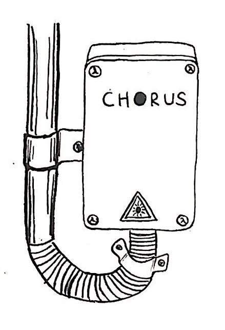
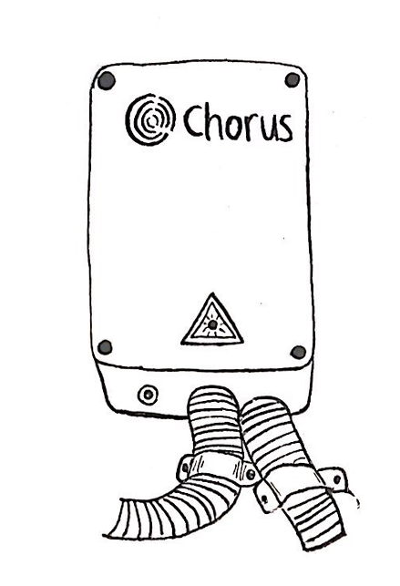
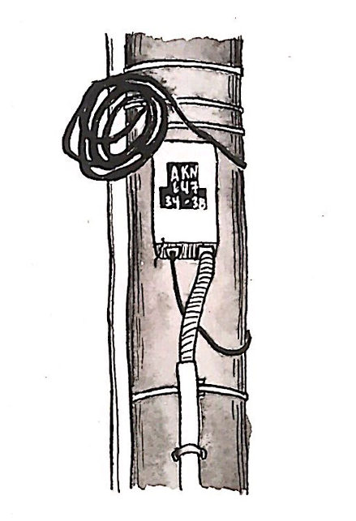
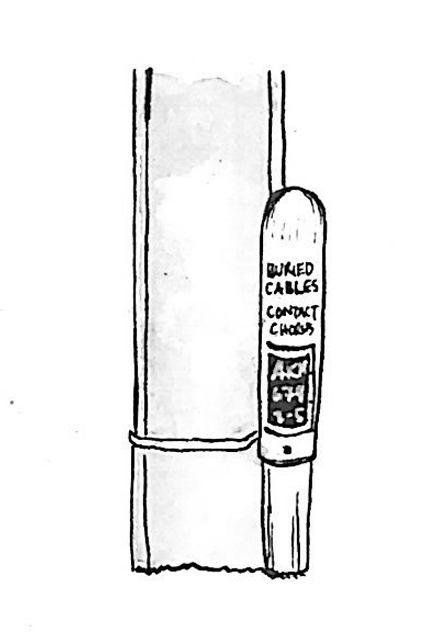

Chorus Fibre Box
This box sits outside of a property. To get fibre optic internet to your house or building, an ONT is usually connected to this and installed inside the building, and then your router is connected to the ONT. This box displays Chorus' most recent logo.

Chorus Fibre Box
This is another internet box like the last one. This one displays Chorus' previous logo, so presumably it is older than the previous one shown.

Chorus Box
This box is attached to a power pole. Small text on the plastic cable cover had "Chorus" and "Fibre optic" written on it in various places.

Buried Cables
The sign on this small post reads "BURIED CABLES. CONTACT CHORUS 0800 463 896 BEFORE YOU DIG." This post looked a little old and worn, so it potentially relates to older copper wire (ADSL/VDSL) internet.